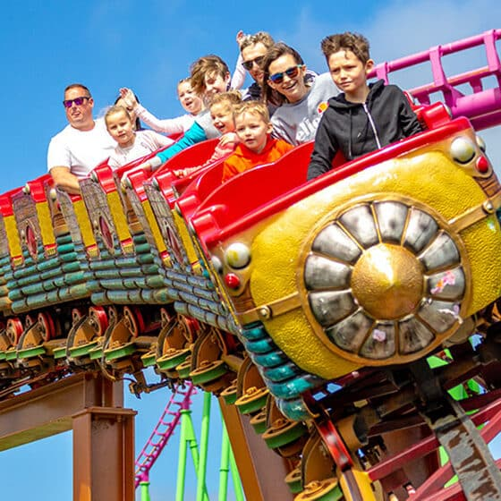

Height Requirement
1m - 1.2m*
Price
£4.00
Status
Loading...
Wait Time
-
Included with Any Wristband
About this Ride
Operating since 1995, Rhombus Rocket is a WGH Ltd powered coaster that received major refurbishments in 2007 and 2019. The latest renovation added striking brown supports and gold track, along with a redesigned train. The station features an attractive trellis design and updated color scheme, maintaining this classic ride's appeal for new generations.
*Riders between 1m and 1.2m must be accompanied by an adult